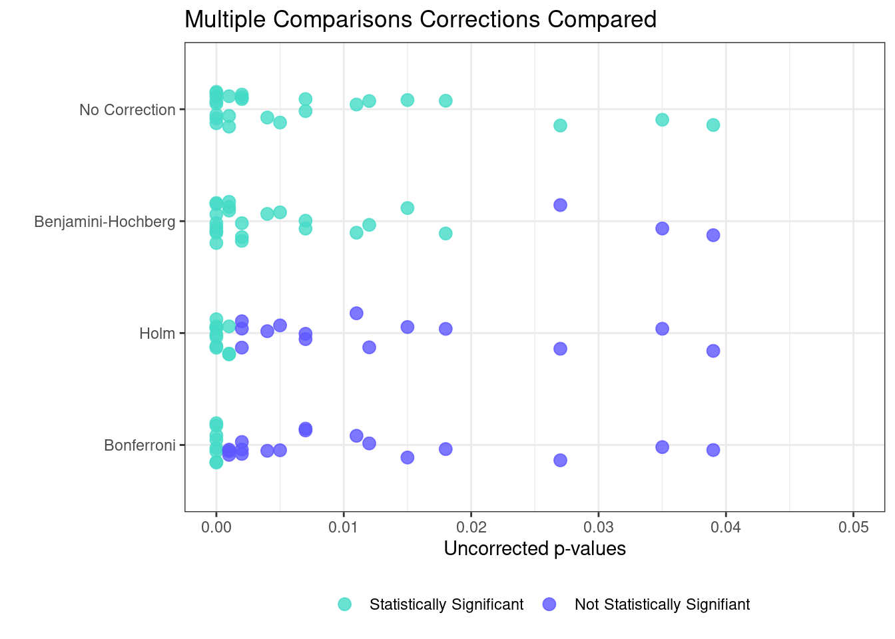

10 Things You Need to Know About Multiple Comparisons
Authors
Alexander Coppock
Abstract
The “Multiple Comparisons Problem” is the problem that standard statistical procedures can be misleading when researchers conduct a large group of hypothesis tests. When a researcher does more than one test of a hypothesis (or set of closely related hypotheses), the chances are that some finding will appear “significant” even when there’s nothing going on.
Classical hypothesis tests assess statistical significance by calculating the probability under a null hypothesis of obtaining estimates as large or larger as the observed estimate. When multiple tests are conducted, however, classical p-values can mislead — they no longer reflect the true probability under the null.
This guide 1 will help you guard against drawing false conclusions from your experiments. We focus on the big ideas and provide examples and tools that you can use in R.
1: Almost every social science experiment faces a multiple comparisons problem
Typically, researchers are not interested in just one treatment versus control comparison per experiment. There are three main ways that comparisons proliferate:
Multiple treatment arms. When an experiment has \(n\) treatment arms, there are \(n(n-1)/2\) possible comparisons between the arms.
Heterogeneous treatment effects. Often, we are interested in whether the treatment has different impacts on different subgroups. For example, a treatment might be more effective for women than for men.
Multiple estimators. Often, experimenters will apply multiple estimators to the same dataset: for example, difference-in-means and covariate adjustment. There is of course nothing wrong with employing multiple treatment arms, exploring treatment effect heterogeneity, or using multiple estimators of the treatment effect. However, these design and analysis choices sometimes require that researchers correct their statistical tests to account for multiple comparisons.
Multiple outcomes. Researchers often assess the effects of an intervention on multiple distinct outcomes or multiple operationalizations of the outcome variable.
These concerns are especially problematic when making a “family claim,” that is, when you are summarizing a series of results. For example, a family claim might be that treatments A, B, C, and D had no effect, but treatment E did. Or, similarly, the treatment had no effect among group 1, group 2, or group 3, but had a strong effect among group 4.
The multiple comparisons problem is related to, but different from, the problem of “fishing.” Fishing occurs when an unscrupulous analyst conducts many tests but only reports the “interesting” ones. In essence, fishing withholds the necessary information we would need in order to correct for multiple comparisons.
2: Why multiple comparisons are a problem
Let’s set up 1 test: we have 1 coin and we will flip it 10 times. We don’t know if the coin is fair but decide that if we flip over 9 heads and 1 tails, we will say that the coin is unfair. Let’s suppose that this is a fair coin; a coin that has a 50% chance of showing a head in a single flip. We are therefore not likely to flip over 9 heads and 1 tails and will most likely find that the coin is fair.
Now, let’s set up 5 tests: we have 5 coins and we will flip each of them 10 times. Again, we decide that the coin is unfair if we flip 9 heads and 1 tails; again, let’s suppose that all 5 coins are fair. The chance that we see 9 heads and 1 tails for a single coin is still very low. However, after doing 5 tests, it is much more likely that at least 1 of the coins will show 9 heads and 1 tails purely by chance. This result may then lead us to think that some or all of the coins are unfair, even though in reality all the coins are fair.
We can see from the coin flipping example that the more tests we run, the more likely we are to see an effect or relationship and the more likely we are to mistakenly claim to have detected an effect when in reality there is no effect and what we observe occurred by chance; this is the multiple comparisons problem.
In this guide, we will describe three main approaches for addressing the multiple comparisons problem:
p-value adjustments. Statisticians have derived a number of corrections that can guard against multiple comparisons mistakes. As described in the next section, these corrections control either the Family-Wise Error Rate (FWER) or the False Discovery Rate (FDR). Most of these adjustments apply a simple formula to a series of “raw” p-values; we will also describe a simulation method that can take account of features of a specific research setting.
Pre-analysis plans. These plans are a powerful design-based tool that enables an analyst to pro-actively manage the multiple comparisons problem.
Replication. If we are concerned that a finding is simply an artifact of sampling variability that we happened to discover because of a naive repeated application of classical hypothesis testing, then the best way to resolve the question is to conduct the experiment again.
3: Don’t mix up the FWER and FDR!
In classical hypothesis testing, the “\(\alpha\) level” describes how willing the researcher is to make a certain kind of mistake: a false positive or a “Type I error” where a researcher falsely concludes that an observed difference is “real,” when in fact there is no difference. From the coin flipping example, concluding that we have an unfair coin because we flipped 9 heads and 1 tails when in reality we have fair coins is an example of a Type I error or false positive error. After setting the \(\alpha\) level, the researcher conducts a hypothesis test and if the p-value \(\leq \alpha\), we call the result “statistically significant”. In many social science applications, the alpha level, or Type I error rate, is set to 0.05. This means that the researcher is willing to commit a Type I error 5% of the time.
In the world of multiple testing, the Type I error rate is associated with one of two things: the Family-Wise Error Rate (FWER) or the False Discovery Rate (FDR). To explain their differences, let’s first consider Table 1 which shows different types of errors. After conducting our hypothesis tests, we observe \(m\) (the total number of hypothesis tests), \(R\) (the total number of hypothesis tests that are statistically significant), \(m-R\), (the total number of hypothesis tests that are not statistically significant). However, we do not know how many tests from \(R\) are false positives (FP, Type I error) or true positives (TP).
Fail to reject null hypothesis (p > 0.05)
Reject null hypothesis (p \(\leq\) 0.05)
Total Hypotheses
Null hypothesis is true
TN (True Negative)
FP (Type I error, False Positive)
\(m_0\)
Null hypothesis is false
FN (Type II error, False Negative)
TP (True Positive)
\(m - m_0\)
Total Hypotheses
\(m - R\)
\(R\)
\(m\)
The FWER is the probability of incorrectly rejecting even one null hypothesis, or \(P(FP \geq 1)\) across all of our tests. Suppose we have three null hypotheses, all of which are true. When the null hypothesis is true, but we nevertheless reject it in favor of some alternative, we commit a Type I error. If we set \(\alpha\) (the Type I error rate) to be 0.05, we have a [\(1−(1−0.05)^3=0.142\)] chance of rejecting at least one of them. In order to control the FWER (i.e., reduce it from 14.2% back down to 5%), we need to employ a correction. We’ll explore three ways to control the FWER (Bonferroni, Holm, and simulation) in the sections below.
The FDR is subtly different. It is the expected proportion of false discoveries among all discoveries, or \(E[FP/R]\)2. In the case where no discoveries are found (\(R=0\)), then the “share” of false discoveries is taken to be zero. There are some connections to the FWER. For example, if in fact all null hypotheses are true then the FWER and FDR are the same. To see this, note that in this case if no significant rejections of the null are found, then the share that are false discoveries is zero. But if some are found (no matter how many), then the share that are false is 100% (since all null hypotheses are true). So the false discovery rate in this case is just the probability that some true null hypothesis is falsely rejected—the FWER. Beyond this case however the FDR is less stringent than the FWER. We’ll also explore some ways to control FDR in the sections below.
4: Control the FWER with Bonferroni-style corrections (including the Holm correction)
The Bonferroni correction is a simple and commonly-used approach for addressing the multiple comparisons problem although it usually understates how much information is available to detect an effect. If you conduct \(m\) tests but want to make sure that you make no more than \(\alpha\) errors out of the total \(m\) tests, the target significance level should be \(\alpha/m\), or, equivalently, you multiply your p-values by \(m\), and apply the standard \(\alpha\) level. (The trouble with multiplying the p-values is sometimes you end up with values over one, rendering the interpretation of the p-values incoherent so software just replaces those p-values with the number 1.)
For example, suppose you conduct an experiment that has 3 dependent variables. You conduct three difference-in-means tests that yield the following classical p-values: 0.004, 0.020, and 0.122. If your \(\alpha\) level is the standard 0.05 threshold, then you would usually declare the first two tests statistically significant and the last test insignificant. The Bonferroni correction, however, adjusts the target p-value to \(0.05/3 = 0.016\). We then declare only the first test to be statistically significant.
The Bonferroni correction works under the most extreme circumstances, that is, when all \(m\) tests are independent from one another. To see how this works, imagine we are testing three true null hypotheses using a classical \(\alpha\) level of 0.05. Each test, therefore has a 5% chance of yielding the wrong answer that the null hypothesis is false.
But our chances of making at least one mistake are much greater than 5% because we have three chances to get it wrong. As above, this probability is in fact [\(1 - (1 - 0.05)^3 = 0.142\)]. If we use the Bonferroni correction, however, our chances of getting it wrong fall back to our target \(\alpha\) value: [\(1 - (1 - 0.05/3)^3 \approx 0.05\)] .
This correction works in the worst-case scenario that all tests are independent. But in most cases, tests are not independent. That is, if your treatment moves outcome A, it probably moves outcome B too, at least a little. So what tends to happen is, researchers report that their results “withstand” Bonferroni when they are extremely strong, but decry Bonferroni as too extreme when the results are weaker.
Instead of using the Bonferroni correction, you can use the Holm correction. It is strictly more powerful than Bonferroni, and is valid under the same assumptions. It also controls the FWER. Suppose you have \(m\) p-values. Order them from smallest to largest. Find the smallest p-value that satisfies this condition: \(p_{k}>\frac{\alpha}{m+1−k}\), where \(k\) is the p-value’s index. This and all larger p-values are insignificant; all smaller p-values are significant.
Taking our three p-values from above: 0.004, 0.020, and 0.122: \[0.004<\frac{0.05}{3+1−1}=0.017\]\[0.020<\frac{0.05}{3+1−2}=0.025\]\[0.122>\frac{0.05}{3+1−3}=0.050\]
Under the Holm correction, the first two tests are significant, but the last test is not.
5: Control the FDR with Benjamini-Hochberg
The Benjamini–Hochberg (B-H) procedure controls the FDR. Like the Holm correction, you also begin by ordering \(m\) p-values. Then you find the largest p-value that satisfies: \(p_{k}≤\frac{k}{m}\alpha\). This test, and all tests with smaller p-values are declared significant.
Using the Benjamini–Hochberg procedure, the first two tests are significant, but the third is not. Notice that the FDR does not control the same error rate as the FWER. It is common for those controlling the FDR error rate to take “significant tests” to indicate places to direct more attention for confirmatory tests (which, would then be analyzed using the stricter FWER control). The idea that one uses the FDR to explore and FWER to confirm is also common in genetics and other applications of large scale hypothesis testing.
6: It’s easy to implement these procedures
In R, the p.adjust() function contains many of the corrections devised by statisticians to address the multiple comparisons problem. The p.adjust() function is in base R, so no additional packages are required. The p.adjust() function gives adjusted p-values after implementing a correction.
Code
# Set seed for reproducibilityset.seed(343)# Generate 50 test statistics# Half are drawn from a normal with mean 0# The other half are drawn from a normal with mean 3x <-rnorm(50, mean =c(rep(0, 25), rep(3, 25)))# Obtain 50 p-valuesp <-round(2*pnorm(sort(-abs(x))), 3)# Choose alpha levelalpha <-0.05# Without any correctionssig <- p < alpha# Conduct three corrections# and compare to target alphabonferroni_sig <-p.adjust(p, "bonferroni") < alphaholm_sig <-p.adjust(p, "holm") < alphaBH_sig <-p.adjust(p, "BH") <alpha
The results of this simulation are presented in the table and figure below.
Correction Type
No Correction
Benjamini-Hochberg
Holm
Bonferroni
Statistically Significant
25
22
11
8
Not Statistically Significant
25
28
39
42

Of the 25 null hypotheses that would be rejected if no correction were made, the Bonferroni correction only rejects 8, the Holm procedure rejects 11, and the Benjamini–Hochberg procedure rejects 22 (or tags 22 hypotheses as promising for future exploration). Of these three corrections, Bonferroni is the most stringent while Benjamini–Hochberg is the most lenient.
Instead of R, you can also use this calculator to adjust your p-values.
This calculator works best in Firefox. To use full-screen, go here.
7: A better way to control the FWER is simulation
The trouble with the corrections above is that they struggle to address the extent to which the multiple comparisons are correlated with one another. A straightforward method of addressing this problem is simulation under the sharp null hypothesis of no effect for any unit on any dependent variable. Note that this is a family-wise sharp null.
If the treatment has no effect at all on any outcome, then we observe all potential outcomes for all subjects. We can re-randomize the experiment 1000 or more times and conduct all \(m\) hypothesis tests each time. We know for sure that all \(m\) null hypotheses are true, because the treatment has no effect by construction.
The next step is picking the right threshold value below which results are deemed statistically significant. If \(\alpha\) is 0.05, we need to find the target p-value that, across all simulations under the sharp null, yields 5% significant hypothesis tests.
Once we have the right threshold value, it’s as easy as comparing the uncorrected p-values to the threshold value — those below the threshold are deemed significant.
Code
# Control the FWER through simulationrm(list=ls())library(mvtnorm)library(randomizr)# Helper functionsdo_t_test <-function(Y, Z){t.test(Y[Z==1], Y[Z==0])$p.value}permute_treat <-function(){ treatment_sim <-complete_ra(n, m=n/2) ps_sim <-apply(outcomes, 2, do_t_test, Z = treatment_sim)return(ps_sim)}threshold_finder<-function(threshold){mean(apply(many_ps, 2, x <-function(x) sum(x <= threshold) >0 ))}# Set a seedset.seed(343)# Generate correlated outcomes# Outcomes are unrelated to treatment# All null hypotheses are truen <-1000k <-100; r <- .7; s <-1sigma <-matrix(s*r, k,k)diag(sigma) <- soutcomes <-rmvnorm(n=n, mean=rep(0, k), sigma=sigma)# Complete Random Assignmenttreatment <-complete_ra(n, m=n/2)# Conduct k hypothesis testsp_obs <-apply(outcomes, 2, do_t_test, Z = treatment)# Simulate under the sharp nullmany_ps <-replicate(1000, permute_treat(), simplify =TRUE)# Obtain the Type I error rate for a series of thresholdsthresholds <-seq(0, 0.05, length.out =1000)type_I_rate <-sapply(thresholds, threshold_finder)# Find the largest threshold that yields an alpha type I error ratetarget_p_value <- thresholds[max(which(type_I_rate <=0.05))]# Apply target p_value to observed p_valuessig_simulated <- p_obs <= target_p_value# Compare to raw p-valuessig <- p_obs <=0.05
The target p-value obtained by the simulation is 0.002 — hypothesis tests with raw p-values below 0.002 are deemed significant. Compare this with the Bonferroni method, which would require a p-value below 0.05/100 = 0.0005, an order of magnitude smaller. The closer the correlation of the tests (the parameter “r” in the code above) is to zero, the closer the two methods will be.
The flexibility of the simulation method is both an advantage and a disadvantage. The advantage is that it can accommodate any set of testing procedures, returning a study-specific correction that will generally be more powerful than other methods to control the FWER. The disadvantage is that it requires the researcher to code up a simulation — there are no prewritten functions that will apply across research contexts.
Here are some guidelines and tips for writing your own simulation.
Follow the original random assignment procedure as exactly as possible. For example, if you block-randomized your experiment, make sure your simulations permute the treatment assignment according to the same blocks.
Each simulation should return a set of p-values. (this was accomplished in the permute_treat() function above.)
Be sure to count up the number of simulations in which at least one test was deemed significant, not the average number of tests across all simulations deemed significant.
8: Alternative ways to control FDR and variants of FDR
Recall from earlier that the Benjamini-Hochberg procedure to control FDR can also be too conservative when all null hypotheses are true. There are a number of different variants of the FDR and with each variant, their own procedures for control. In general, these are more powerful than the B-H procedure. Below is a table of a few types:
FDR Variants
Methods for Control
Software
pFDR: positive FDR, \(E[V/R|R>0]\)
The Storey-BH procedure sets a rejection area and estimates the corresponding error rate. This contrasts the B-H procedure sets an error rate \(\alpha\) and estimates its rejection area with the adjustments (Storey, 2002).
\(\alpha\)-investing, a procedure where, after rejecting a null hypothesis, the researcher can “invest” in the \(\alpha\) threshold by increasing the threshold for subsequent tests (Foster and Stine, 2008).
There is the increased chance of accepting more false discoveries with these other methods over the basic B-H approach. However, in cases with many, many tests, where the researcher might be willing to accept a few more false discoveries along with making more true discoveries, these methods for controlling FDR are good alternatives.
9: Creating an index is a way to get a single comparison out of many
Suppose3 a researcher measures \(k>1\) dependent variables. Indexing allows the researcher to reduce these \(k\) outcomes into a single measure (or several thematically-grouped measures). These indexing methods effectively condense the number of dependent variables that investigators test in order to address the multiple comparisons problem. There are a number of ancillary benefits of these indexing methods:
Unlike the other methods of addressing the multiple comparisons problem, the indexing approach may reward researchers for increasing the number of dependent variables. Imagine that a researcher collects \(k=50\) outcome variables and that the treatment does not cause significant differences for any of them, but all the point estimates are in the same direction. If we were to apply a multiple comparisons correction to our 50 tests, our results would get even murkier. However, if we combine all 50 dependent variables into a single index, the resulting dependent variable may in fact exhibit significant differences.
In the presence of limited amounts of attrition across outcomes, these methods may provide some leverage for dealing with missingness on some dependent variables (but not for units for which outcome variables are entirely unobserved).
There are two principal indexing methods in the literature:
If necessary, reorient some outcomes so that beneficial effects are consistently scored higher across all outcomes.
Calculate a \(z\)-score, \(\tilde{y}_{ik}\) by subtracting off the control group mean and dividing by the control group standard deviation, as follows, where \(i\) indexes individuals and \(k\) indexes outcomes:
Sum the \(z\)-scores, \(\sum_{i=1}^K \tilde{y}_{ik}\) (optionally) divide by \(K\) to generate the index.
Optional: It may be desirable to normalize the final index by the control group mean and standard deviation.
In the presence of missing outcomes, one of two approaches could be employed:
Imputation: Kling, Liebman, and Katz advocate a imputation approach for missing values on individual outcomes. Specifically, prior to constructing the index, compute the mean of each outcome variable for each experimental group, \(\bar{y}_{ik}^{Z=1}\) and \(\bar{y}_{ik}^{Z=0}\) using the above notation. Then, impute the mean corresponding to a unit’s assignment status (treatment or control) prior to constructing the index.
“Greedy” Indexing: Instead of imputing values of missing outcome variables ex-ante as in method 1, calculate the \(z\)-scores as above. Where there are missing values for the “raw” outcome variables, there will be missing \(z\)-scores. For each unit, sum the non-missing \(z\)-scores and then divide by the number of non-missing outcomes. Hence, instead of dividing \(\sum_{i=1}^K \tilde{y}_{ik}\) by \(K\) as above, we calculate \(K_{i}\), the number of non-missing outcomes, for each unit.
Inverse Covariance Weighted Index
Anderson (2008) provides a similar approach that constructs an index that employs inverse covariance weighting. This weighting scheme improves efficiency relative to the mean effects index above by affording less weight to highly correlated outcomes. The Anderson index can be constructed through the following procedure:
If necessary, reorient some outcomes so that beneficial effects are consistently scored higher across all outcomes.
Calculate a \(z\)-score, \(\tilde{y}_{ik}\) by subtracting off the control group mean and dividing by the control group standard deviation, as follows, where \(i\) indexes individuals and \(k\) indexes outcomes:
Construct and invert the (variance)-covariance matrix of the resultant matrix of \(z\)-scores calculated in step 2. Call this \(k \times k\) inverted (variance)-covariance matrix \(\hat{\boldsymbol{\Sigma}}^{-1}\).
The weighted indexed outcome, \(\bar{s}_i\) can be estimated via the following procedure, where \(\textbf{1}\) is a \(k \times 1\) vector of ones and \(\textbf{y}_{ik}\) is the \(n \times k\) matrix of \(z\)-scores calculated in step 2.
Optional: As above, it may be desirable to normalize the final index by the control group mean and standard deviation.
As with the mean effects index, this varible \(\bar{s}_i\) the serves as the dependent variable in your analysis. One potential drawback to the inverse covariance weighting index is that there is no guarantee that elements in the inverted covariance matrix (\(\boldsymbol{\Sigma}^{-1}\)) are positive. As such, it is possible to generate negative weights using this indexing method. Given that outcomes are oriented in the same direction, a negative weight effectively reverses the direction of the effect on negatively-weighted outcomes in the construction of the index.
The following functions implement both the mean effects and inverse covariance weighted index methods and evaluate both functions on a DGP with 50 outcome measures:
Code
stopifnot(require(mvtnorm))stopifnot(require(dplyr))stopifnot(require(randomizr))stopifnot(require(ggplot2))set.seed(1234)calculate_mean_effects_index <-function(Z, outcome_mat, to_reorient, reorient =FALSE, greedy =TRUE,impute =FALSE){if(length(Z) !=nrow(outcome_mat)) stop("Error: Treatment assignment, outcome matrix require same n!")if(impute ==TRUE){ R <-1*is.na(outcome_mat) means_for_imputation <-rbind(apply(outcome_mat[Z==0,], MAR =2, FUN = mean, na.rm = T),apply(outcome_mat[Z==1,], MAR =2, FUN = mean, na.rm = T)) to_impute <- R * means_for_imputation[Z+1,] outcome_mat[is.na(outcome_mat)] <-0 outcome_mat <- outcome_mat + to_impute } c_mean <-apply(X = outcome_mat[Z==0,], MARGIN =2, FUN = mean, na.rm = T) c_sd <-apply(X = outcome_mat[Z==0,], MARGIN =2, FUN = sd, na.rm = T) z_score <-t(t(sweep(outcome_mat, 2, c_mean))/ c_sd) index_numerator <-rowSums(z_score)if(greedy ==TRUE){ n_outcomes <-rowSums(!is.na(z_score)) }elseif(greedy ==FALSE){ n_outcomes <-ncol(outcome_mat) } index <- index_numerator/n_outcomes index <- (index -mean(index[Z==0], na.rm =T))/sd(index[Z==0], na.rm =T)return(index)}calculate_inverse_covariance_weighted_index <-function(Z, outcome_mat, to_reorient, reorient =FALSE){if(length(Z) !=nrow(outcome_mat)) stop("Error: Treatment assignment, outcome matrix require same n!")if(reorient ==TRUE){ outcome_mat[, c(to_reorient)] <--outcome_mat[, c(to_reorient)] } c_mean <-apply(X = outcome_mat[Z==0,], MARGIN =2, FUN = mean, na.rm = T) c_sd <-apply(X = outcome_mat[Z==0,], MARGIN =2, FUN = sd, na.rm = T) z_score <-t(t(sweep(outcome_mat, 2, c_mean))/ c_sd) Sigma_hat <-solve(cov(z_score, y = z_score, use ="complete.obs")) one_vec <-as.vector(rep(1, ncol(outcome_mat)))if(sum(is.na(outcome_mat))>0){ z_score[is.na(z_score)] <-0 } w_ij <-t(solve(t(one_vec) %*% Sigma_hat %*% one_vec) %*% (t(one_vec) %*% Sigma_hat))if(sum(w_ij <0) >0){warning('Warning, at least one weight is negative!')} s_ij <-t(solve(t(one_vec) %*% Sigma_hat %*% one_vec) %*% (t(one_vec) %*% Sigma_hat %*%t(z_score))) index <- (s_ij -mean(s_ij[Z==0], na.rm = T))/sd(s_ij[Z==0], na.rm = T)return(s_ij)}
We can see how these indices perform in a setting with \(k = 5\) outcome variables.
[Click to show code]
Code
# A DGP with K outcome variables# Untreated potential outcomes drawn from multivariate normal distributionK <-5r <-runif(n = K, min =-.9, max = .9)sigma <-outer(r, r, FUN ="*")diag(sigma) <-1mat <-rmvnorm(n =200, mean =rep(0, K), sigma = sigma)# Treatment assignmentZ <-complete_ra(200)# Created observed potential outcomes# Assume that ATEs are all oriented in the same direction for the time beingATEs <-rnorm(K, mean = .25, sd =1)for(i in1:K){ mat[,i] <- mat[,i] +rnorm(n =200, mean = Z * ATEs[i], sd =1)}mean_effects_index <-calculate_mean_effects_index(Z = Z, outcome_mat = mat, reorient = F)inv_cov_weighted_index <-calculate_inverse_covariance_weighted_index(Z = Z, outcome_mat = mat,reorient = F)
First, we can examine the properties of the indices alongside our five outcome variables by looking at the covariance matrix.
We can also plot the two indices to show their similarities (or differences). Note that with the final normalization included in the functions above, both indices are on the same scale.
We can estimate the treatment effect on the indexed variable using OLS or a difference-in-means. Note that given the normalization of both indices, the coefficient estimates are on the same scale and thus directly comparable. The p-values here use the standard OLS test-statistic.
There are also two design based approaches for thinking about this problem. One is to use pre-analysis plans to describe in advance which comparisons will be made; the number of tests implicated in a Bonferroni or Bonferroni-style correction is specified before any data analysis is conducted. A pre-analysis plan, among its many benefits, helps to clarify the multiple comparisons problem.
A good example is this pre-analysis plan by Gwyneth McClendon and Rachel Beatty Riedl. The authors specify 24 individual tests they plan to conduct and state ahead of time that they will employ both the Bonferroni and Benjamini-Hochberg corrections. The authors do not state beforehand how they will handle a situation in which the corrections disagree; presumably it will be a matter of judgment for both the authors and the readers of their study.
An additional benefit of pre-analysis plans is the ability to specify beforehand what the primary hypothesis is. There is disagreement among methodologists on this point, but some argue that because the primary hypothesis is not part of a “family claim” that a standardp-value is correct. For example, a researcher might have one primary hypothesis and 10 ancillary hypotheses. The uncertainty surrounding the primary hypothesis should not depend on the number of ancillary hypotheses. The advantage of a preanalysis plan is establishing beforehand which of the many hypotheses is the primary one.
An alternative perspective is to consider, from a theoretical and research design perspective, what is part of the “family claim.” For example, there may be a set of 5 hypotheses that are all used to support the primary hypothesis and the study was designed to focus on these 5 hypotheses. There may also be ancillary hypotheses that are used for exploration; the study was not developed with these ancillary hypotheses in mind, but the researcher thinks that it is interesting to explore these ancillary hypotheses. In a situation like this, the researcher might identify the 5 hypotheses as confirmatory hypotheses that are a family of hypotheses, and thus make adjustments to the p-values of those hypotheses, say controlling the FWER. The ancillary hypotheses would be considered exploratory hypotheses and do not need adjustments or could use more lenient adjustments compared to the confirmatory hypotheses, say controlling the FDR — allowing some false discoveries. Policy or action may be taken according to the confirmatory hypotheses, while future research may be developed to target the exploratory hypotheses.
The advantage of a preanalysis plan is establishing beforehand which of the many hypotheses is the primary one, which hypotheses are part of the same family of hypotheses or confirmatory, and which hypotheses are exploratory.
A second approach is to turn to replication. Replication is the best guard against drawing false conclusions from a noisy experiment. In particular, replication helps to establish whether heterogeneous effects findings are reliable. Researchers have a large degree of freedom in choosing how to search for heterogeneity — they can explore the entire covariate space searching for interesting interactions. Such a procedure is likely to lead to a large number of false positives. Multiple comparisons corrections such as the ones discussed above might help — but researchers also have discretion as to which correction to apply. Replication addresses this problem directly by measuring the same covariates and looking for differential effects according to the previous experiment’s analysis.
A good example comes from Coppock, Guess, and Ternovski (2015), in which the same experiment was conducted twice. The experiments measured the effects of two treatments on two dependent variables among four subgroups. In principle, this leads to 60 possible comparisons per experiment.
3 pairwise comparisons between treatment 1, treatment 2, and control.
4 subgroups means 4 comparisons against zero plus 6 pairwise comparisons = 10.
2 dependent variables
3 * 10 * 2 = 60
The figure below shows the results of the experiment and replication. Study 1 finds that “organization” accounts have smaller treatment effects than females, males, and unknown accounts on the “signed” DV but not the “tweeted” DV. The uncorrected p-value of the difference between “Organization” and “Male” conditional average treatment effects was 0.00003 for the “follower” treatment and 0.00632 for the “organizer” treatment. The Bonferroni correction would multiply both p-values by 60, suggesting that the “organizer” treatment does not work significantly differently for organizations versus men.
The replication, however, shows the same pattern of treatment effects: smaller effects for Organization accounts than for others on the “Signed” DV, but similar treatment effects on the “Tweeted” DV. Any doubt that the different response on the two different dependent variables was due to sampling variability are assuaged by the replication.
Footnotes
Originating author: Alex Coppock, 18 Feb 2015. The guide is a live document and subject to updating by EGAP members at any time. Coppock is not responsible for subsequent edits to this guide. Updated by Lula Chen, 16 Feb 2021.↩︎
Formally \(E[FP/R|R>0]P(R>0)\) to avoid dividing by 0.↩︎
Section 9 updated by Tara Lyn Slough, 4 February 2016↩︎